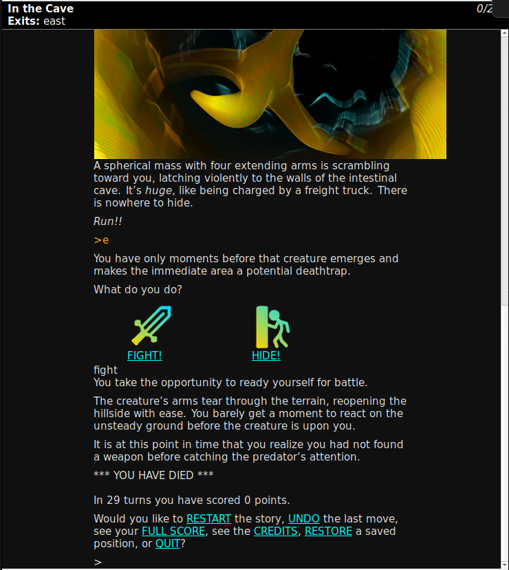

Core benefits
-

Powerful
Want to write a story with sophisticated world simulation, dynamic runtime capabilities, advanced programming constructs, wild new game mechanics, and more? TADS can accomplish feats that are currently impossible for other interactive fiction authoring systems. Authors switching to TADS will see their playground for creativity and innovation open up immensely!
-

Simulation-Oriented
Interested in simulation? Both of TADS 3’s standard libraries, adv3 and adv3lite, come with rich and well-implemented world models with all of the features you could possibly need for even the most complex and simulation-heavy parser game. And, if you don’t need these features, they cleanly fade into the background.
-
Flexible
Want to use new senses, or navigate in non-Euclidean directions? Although TADS 3’s standard libraries come with highly complex world models already, those assumptions are just your starting point! TADS 3 is designed to make your own code, the standard library code, and even the language itself, flexible and extensible in a way that makes games fun to write and easy to iterate on.
-

Power-User Friendly
Already comfortable with programming? Want to be able to straightforwardly write algorithms and use general programming constructs, instead of being limited to simple scripting? TADS 3 is designed for advanced interactive fiction authors, offering the clarity, conciseness, and capability of a robust programming language enhanced with features designed for text-based simulation of any kind.
Show me the code
Defining rooms
// NOTE: Two slashes denote a comment!
exampleRoom: Room 'Room Name'
"Room description here. "
south = southRoom
// Block travel with a message:
southwest = "There is only a sealed window that way. "
// Reroutes: in -> south
in asExit(south)
;Adding objects to rooms and other objects
// Will be added to exampleRoom
table: Surface 'a simple table' @exampleRoom
"Table description here. "
;
// Will be added to table.
// The number of plus signs ("+") indicates
// container nesting level, relative to objects above!
+ cup: Container 'cup'
"Just a simple cup. "
;
// Will be added to cup
++ water: Thing 'water'
"Clear and clean! "
massNoun = true
ambiguouslyPlural = true
isFixed = true
// Strings can span several lines,
// just like in HTML!
cannotTakeMsg =
'You try to scoop the water out of the cup,
but it slips through your fingers. '
;
// Will be added to table
+ newspaper: Thing 'newspaper;;news paper'
"The newspaper is not from today. "
readDesc = "The headline reads, <q>Dog wins new car!</q>"
;Dynamically creating objects at runtime
hallway: Room 'Simple Hallway'
"Just a simple hallway. "
;
+ sodaDispenser: Thing 'refrigerator thing'
"There is a big red button on the front."
isFixed = true
// The player will see this described in the hallway
specialDesc =
"There is a large refrigerator-sized box
humming away in the corner. "
dispenseSound = 'beep'
;
++ button: Button 'big red button'
makePushed() {
// Allow the machine to be called a "soda dispenser"
sodaDispenser.addVocabWord('soda', MatchAdj);
sodaDispenser.addVocabWord('dispenser', MatchNoun);
// Create a new clone of sodaBottle, and
// give it to the player
local newSoda = sodaBottle.createClone();
newSoda.moveInto(gPlayerChar);
// You can use <<variables>> in your strings!
"The box makes a <<sodaDispenser.dispenseSound>>
sound, and a new soda bottle falls out, which you
then pick up. ";
}
;
+ sodaBottle: Thing 'soda bottle'
"A cold bottle of soda."
feelDesc = "It feels cold."
specialDesc = "You see bottle of soda lying on the floor."
;Rules
// Instead of thinking about a ResolvedTopic ...
Doer 'think about ResolvedTopic'
execAction(c) {
// ... say "That's quite beyond you." instead ...
"That's quite beyond you. ";
}
// ... but only when the ResolvedTopic
// is "relativity", specifically.
when = (gCommand.dobj.name == 'relativity')
;Embedded objects
room: Room 'room'
// south is a new object, defined as follows:
south: TravelConnector {
travelDesc = "You try to move south, but nothing happens. "
}
;Respond to actions
// Arbitrary
cup: Container 'a cup'
taken = 0
// To handle taking this cup
// ("dobj" is short for "direct object")
dobjFor(Take) {
action() {
inherited();
taken++;
}
report() {
if (taken == 1) {
// Double-quote strings are a
// shorthand for say(), while
// single-quote strings simply
// hold data.
// We can also use
// {token statements}, which
// dynamically change the output,
// based on the action's context.
"Taking {the dobj},
{I} notice{s/d} that it is still hot. ";
}
else {
// Say the usual stuff instead:
inherited();
}
}
}
;
// On a room
room: Room 'room'
roomBeforeAction() {
// Instead of jumping in this room...
if (gActionIs(Jump)) {
// We can use triple-quotes to dedicate an
// entire block of text for output.
"""
You try to jump, but the roof is
too low and you end up bumping your head
without going much of anywhere.
""";
// Cancel the action with
// the "exit" statement:
exit;
}
}
;Modifying and replacing objects and classes
modify Jump
execAction(cmd) {
if (gActor.bulk > 1500) {
"You're too big to jump. ";
// "abort" is like "exit",
// but prevents a spent turn
abort;
}
// Otherwise, do what was defined
// before our modification.
inherited();
}
;
replace class LibClass: object
prop1 = 10
;Defining new verbs and actions
VerbRule(Repair)
('repair' | 'mend' | 'fix') singleDobj
: VerbProduction
action = Repair
verbPhrase = 'repair/repairing (what)'
missingQ = 'what do you want to repair'
;
DefineTAction(Repair) ;
modify Thing
isRepairable = nil
dobjFor(Repair) {
preCond = [touchObj]
verify() {
if (!isRepairable) {
illogical(cannotRepairMsg);
}
}
}
cannotRepairMsg = '{The subj dobj} {does} not need mending. '
;Ready to learn more?
TADS 3 is comprised of several core components:
-
A special-purpose object-oriented programming language designed with concise yet readable syntax and a focus on extensibility, dynamic typing, and declarative data declaration as a first-class citizen. It has features like advanced multiple inheritance, multimethods, operator overloading, a garbage collector, anonymous functions. Smalltalk-style catch-all methods, runtime reflection, and more. Think of it like JavaScript’s syntax, Ruby’s object model, and many of C++’s features mixed together. Yet, at the same time the TADS 3 language makes growing and modifying your game—and the standard library!—faster and more fun than a general purpose language because although it is general purpose, it has been custom-designed for the use case of authoring semantic simulations like interactive fiction games.
-
Two powerful text-adventure-specific standard libraries containing advanced world models that have things like room parts, sense-passing, a complex understanding of attachable and detachable sub components and object relationships, and hundreds of different powerful properties to customize the precise behavior of each object, an advanced and extremely customizable parser that can understand arbitrary custom sentences, and perform user-customizable spell check— and more.
-
A performant compiler designed to be simple, flexible, and easy to use with any build system you want.
-
An advanced virtual machine specifically designed for text-based simulations and multimedia output, but capable of much more.
In addition, there are also different kinds of interpreters that use the virtual machine to run your TADS games and then interpret the output produced by the games into the multimedia output and graphical user interface players see.
To learn more about, and download, these components, see below.
TADS 3 also has an extensive set of learning resources, including roughly eight book-length references and guides, all of which are detailed, orderly, clear, and thorough. If you’ve struggled with the documentation of other interactive fiction authoring systems in the past, or are concerned that using such a niche piece of software will make answers hard to find, fear not! Michael J. Roberts and Eric Eve have ensured that no TADS programmer will ever stay confused for long. For more information on which manuals to read and where to find a full list of TADS documentation for each of the respective standard libraries, please consult the relevant section below;
Other unique features
-
Advanced multimedia capabilities
Present your stories through immersion, interactivity, and clarity!
- In-line images
- Colorful text with script and monospaced fonts (as well as the usual bold, italic, underline, strikethrough, and centering)
- Music and sound effects, with simultaneous one-shot, looping, and sporadic channels
- Fade, volume, and queue control for all sounds
- Clickable text for hyperlinks and buttons
- Multiple layout panes, which can be leveraged for animation, decorative window borders, button grids, live readouts, control panels, and more!
- Embedded multimedia files, wrapped into one ready-to-ship game file
-
Extensible standard library
Any object or class—including those intrinsic to the language and standard library—can be modified or entirely replaced in TADS 3 code. This gives authors the *powerful ability to quickly, clearly, and confidently tinker with their game worlds and logic.
Modification applies to everything, from author-created objects at the surface, to the deeper core features like autocorrect, command clarification, undo, redo, save, and restore systems! Would you like to edit the main execution loop or the parser itself? TADS put the power in your hands, at your own pace!
The modification system even lets you change specific fractions of classes and defined objects, freeing you from the hassle of redefining large swaths of the codebase to repair or avoid definition conflicts.
Modules have never been easier! The modification system smooths out the majority of compatibility concerns with plug-in extensions and code modules from other authors.
-
Create with speed
Expertly wield grand complexity through simpler edits!
- C-style preprocessor macros
- Templates
- Operator-based object hierarchies
- Incremental builds and modular compilation
- Compile-time code execution
- Run-time string templating
- Runtime reflection
It’s like the code can write itself!
Tell your story through a wide number of easy notations for both strings and printed passages! Writing in TADS has the ease of HTML-like formatting, fused with the power of a capable and flexible coding language.
Function calls, conditionals, values and can be inserted directly into your strings! Say goodbye to lines of pesky concatenations!
-
Dynamic play and development
TADS 3 has the powerful ability to dynamically create new objects—or clone existing ones—during play or during compile time, thanks to automatic garbage collection, from world model objects like Rooms and Things to regular objects. lists, string buffers, and more, and expand their size at runtime.
Perform full procedural generation of everything from objects to code strings!
Evaluate arbitrary code strings, even ones provided by the user, at runtime!
TADS 3 games can also read and write files safely within the game file’s sandboxed directory. Persistent data is yours, in a wide variety of file types. You can even roll your own custom binary formats—if the need arises—with bitwise operations and binary file parsing!
Expand your game’s connectivity with network packets, and create a server, all in TADS 3!
Need to distribute a patch file? Interpreted code can be loaded from a file, and executed during play!
-
An advanced NPC AI system
Tired of static NPCs with little agency of their own? As well as providing a built-in means for NPCs to initiate conversation, TADS 3 has an in depth system for writing NPC AIs, with features like:
- Agenda Items, to craft intelligent NPCs that gain and dismiss goals according to dynamic conditions in the world or their own internal state and take actions to achieve them;
- Actor States, to represent the different moods, activities, or other states an NPC might be in, in a way that encapsulates all the state information into one coherent place and automatically updates every detail of the actor to match their relevant state, as well as including passive behaviors associated with the state;
- Actor Topic Entries, for complex trees of conversation topics that can open up other topics, automatically recommend topics, or temporarily enable contextual responses, and can be enabled or disabled dynamically based on changing world state, and represented as a declarative object hierarchy with no need for nasty if-else chains and state variables;
- and a sophisticated player and NPC knowledge system!
-
Maximum power with Web UI
Modern Web browsers are extremely sophisticated UI application platforms, far beyond what any stand-alone IF interpreter can offer. With TADS 3’s Web UI library, you can harness that power! Web UI games can use the power of server network programming, full client-side CSS, JavaScript, and HTML, access to the DOM in your TADS code, communication with client-side JS from TADS via AJAX or a custom asynchronous pub/sub event framework, and more, to build something incredible.
Craft cooperative and competitive experiences by using TADS 3’s networking and server capabilities! Stretch the limits of what it means to be a parser IF game using the multimedia and UI capabilities enabled by TADS 3’s Web library!
- Directional arrow buttons
- Action buttons
- Live tile-based minimap with click to go-to
- True Twine-style choice menus alongside the parser
It’s the incredible flexibility of TADS 3 with the endless power and community of JavaScript!
-
...and many other built-in features!
In addition to the powerful TADS 3 features already mentioned above or below, TADS 3 has many more Interesting features:
- Items have weight and bulk, and containment can be limited by weight and/or bulk;
- Items can be contained under and behind others (as well as in or on);
- Complex containers to simulate multiple types of containment in the same object;
- Lockable objects can be locked/unlocked with multiple keys or none;
- An adaptive hints system;
- A number of different scoring mechanisms;
- A system for representing objects composed out of (possibly detachable) sub-components that attach to each other in different ways;
- The ability to switch narration between the present and past tenses, and between first, second and third person;
- …and more!
Installing TADS 3
Getting an interpreter
There are three types of TADS interpreters:
- HTML TADS interpreters, which support the fully panoply of TADS’ built-in multimedia, interface, and virtual machine runtime features using a small subset of HTML;
- text-only TADS interpreters, which just ignore all the multimedia commands and display only text, and can sometimes not support the full runtime,
- and the Web UI TADS interpreter, which can be enabled in the game image itself, so that when run, the game will function as a server and serve up a full HTML TADS interpreter into your web browser, with a lot of extra functionality.
HTML TADS
If you want to play or develop regular TADS 3 games the simplest and most supported way, we recommend going with an HTML TADS interpreter. Currently, the best one is QTADS, both because it is the most feature-complete and bug free, and because it is still being regularly updated and improved (at least as of May 17, 2023). It has versions available for Linux, Windows, and macOS. If the links below don’t suit your needs, more architectures and OS versions are listed on the qTADS downloads page.
 Download
QTADS
Download
QTADS
 Download
QTADS
Download
QTADS
 Download
QTADS
Download
QTADS
There is also the self-titled “HTML TADS” interpreter for Windows (named after the language that it handles), available on the official TADS website, which was the reference implementation for TADS interpreters but which has not been updated since at best 2013.
Web UI
If you want to run a Web UI TADS game, we recommend using an interpreter based off of the original, complete, official TADS 3 runner and virtual machine written by Michael J. Roberts, which implemented the full capabilities of TADS 3. To get this, you can use FrobTADS for Linux, BSD, and macOS, and the t3run program provided with the TADS Author’s Kit for Windows (see in the “compilers” section below), as these have the most complete implementation of the TADS virtual machine/runtime (since they’re both based on TADS 3’s actual official implementation code) and can run in the headless networked server mode needed for Web Play.
To run a Web UI TADS 3 game with FrobTADS, just run this command after installing FrobTADS:
frob -N 0 your-t3-file.t3
To run it with t3run, just type:
t3run.exe -plain -ns0 -webhost localhost your-t3-file.t3
Note: we plan to release a cross-platform self-contained GUI program for running TADS 3 Web UI and HTML TADS games in the same program, on your local computer, eventually. There is a working prototype here. Currently it relies on FrobTADS and QTADS already being in your path and you having Qt6.6 and PySide6.6 installed, but when we package it up (as an AppImage on Linux, an installer wizard on Windows, and a .app on macOS) that won’t be the case.
Text-only
If you just want to play a TADS 3 game in text-only mode, we recommend going with a general purpose multi-format interpreter. Just keep in mind that playing TADS 3 games in text-only mode will cause you to miss out on a lot of the experience, so we don’t recommend it. The most popular multi-format interpreter, Gargoyle, is a good choice, since it can run TADS games. FrobTADS does also come with a command line text-only interpreter as well.
Getting a compiler
If you intend to develop TADS 3 games, you’ll need a compiler to turn your source files into a game file that an interpreter can run.
On Windows, you can use the official Author’s Kit for Windows, which provides executables for t3run (a fully featured runner and terminal interpreter) and t3make (the compiler), as well as the Workbench and all of the basic TADS 3 library files, including adv3, although it does not include adv3lite.
On Linux, we have an unofficial Author’s Kit for Linux which you can download, which also provides self-contained, distro-independent AppImages for frob (the fully featured runner and terminal interpreter) and t3make (the TADS 3 compiler) as well as all of its library files including both adv3 and adv3lite, which should greatly smoothen the installation process.
For Mac and BSD, as well as for Linux users who prefer to build from source, you can also get the FrobTADS source code here, which will provide the TADS 3 libraries, frob, t3make, and adv3 but requires being built from source. We have instructions on how to install, set up, and use all of these installation methods in our Quick Start Guides (see the learning section below) if you need more help.
 Download
FrobTADS
Download
FrobTADS
Setting up your development environment
Although the TADS 3 Author’s Kit for Windows comes with a full-fledged IDE called Workbench, that program is now very old and probably doesn’t have all the features you’re used to in a modern editor. As a result, across the board, we recommend one of two editors for writing TADS:
-
TADS 3 Tools for Visual Studio Code offers a feature-rich and easy to use integrated development environment for TADS 3 authors, so if you have no specific editor preference or already use Visual Studio Code, it is highly recommended.</li>
-
There is also tads3-mode for Emacs, which offers slightly better auto completion and most of the basic necessary capabilities to make a modern programmer feel at home, but which is admittedly not as advanced as TADS 3 Tools. This is for relatively advanced authors who prefer not to use Visual Studio Code for whatever reason.
Adventurous and ambitious authors who intend on writing very large games, or perhaps TADS 3 libraries on their own, might also benefit from installing and setting up Eric Eve’s docgen program, which generates a Rust-like organized and cross-referenced documentation reference from your source code.
Which standard library should I choose, adv3 or adv3Lite?
Yes, that's right, TADS 3 has two standard libraries! Here's the breakdown:
The big, complex, full-featured graybeard: *adv3*
Adv3 is the default standard library distributed with TADS 3. It is quite old, having been created along with TADS in 2006 and last having been updated in 2013, but that comes along with some benefits as well as some downsides. The main benefit of using adv3 is that it is a coherent, integrated whole, one single incredibly complete and complex world model where everything integrates with everything else. It comes packed with every conceivable object type, class, or feature you could possibly need, and an incredibly complex world model already wired up and integrated into the whole, so that any game you create with it will automatically be running with a world model more complex than almost any parser interactive fiction game.
The downside, however, is that adv3 relies on an incredibly deep and complex multiple inheritance class hierarchy and a huge number of highly specific classes, which it relies heavily on as mix-ins to customize the behavior of objects. Moreover, it is not particularly modular, so every game you write with it will have to bring in that whole gigantic world model. Furthermore, it is not as explicitly designed for extensibility or customization as adv3Lite is. Thus, if you want a very complex and simulation-heavy parser game, and what you want to do fits with the existing carefully crafted complex world model of adv3, then it might be for you. If not, you might want to look at adv3Lite.
Another downside is that adv3 lacks many of the features popular in modern interactive fiction authoring systems, such as scenes, regions, rules, relations, and more. What it does have, however, is:
- Room parts and postures integrated as default
- A large assortment of already premade objects and behaviors (there are 150 subclasses of the Thing category alone, including things like Chairs, Beds, Platforms, Booths, Nested Rooms, Vehicles, Floorless Rooms, Dispenser, Matchbook, StretchyContainer, Distant, Enterable, Stairway, and more)
- Multiple lighting levels
- Real time processing
- Sense passing
- Sensory attenuation
- Different sensory media
- Built-in provisions for entirely new senses
- Several different scoring systems

The lightweight, modular, and modern newcomer: *adv3Lite*
Adv3Lite is a newer standard library created by Eric Eve, and has been updated as recently as 2023. Although the main benefit of adv3Lite is that the class hierarchy is much simpler, since most customization for objects has been relocated to properties on a single class representing the object’s general kind, instead of in a main base class and several mix-in classes, the “lite” in the name is somewhat of a misnomer. This restructuring allows much greater flexibility in creating custom objects and makes the library easier to learn, but only a few features have been streamlined out in the process, and many of the common ones — such as room parts, postures, and library classes as a shorthand for properties — can be added back via extensions.
Instead, the library is “lite” because it has been specifically designed with modularity and extensibility in mind. Adv3Lite makes customizing game mechanics, changing the world model, or creating extensions in ways that wouldn’t slot neatly into adv3’s existing world model easier and more powerful, and if you’re not using specific game mechanics, your game doesn’t have to import them and your code doesn’t have to deal with them, unlike with adv3 where the whole complex world model is turned on at all times.
However, as the adv3Lite website says, you get several crucial new features with adv3Lite that have become popular in the modern interactive fiction authoring space and which adv3 does not offer:
- Doers, which work like Instead rules in Inform 7, allowing you to specify command queries that apply under certain conditions and override the default action;
- the vocab property, which allows you to define several vocabulary-related properties of an object all at once in a concise and convenient manner more akin to how it works in Inform;
- a world-model query system for making queries about the general state of the world;
- message parameter substitutions to automatically decline/conjugate based on person, number, and tense, including working for over 200 irregular verbs and many plurals;
- built in pathfinding for players and AIs;
- built in debugging commands;
- regions (and dynamic regions) with region-located backdrops, scenery, events, actions, senses, and so on;
- scenes;
- automatic grouping of objects;
- built in help for new players;
- and a significantly enhanced conversation and NPC AI system.<
There is also an extensive list of other community-contributed extensions and libraries on the IF Archive, should you need features not available even in the existing standard libraries. All of these are compatible with adv3 and most can probably be trivially made compatible with adv3Lite, in our experience. Just a few of the delightful things you’ll find there include qtalk, an impressively feature-complete plugin for Fallout-style menu based conversation, Relations and Rulebooks, which allow you to specify relations and use rulebooks just like in Inform, and ConSpace, an extension that enhances the modelling of spatial relations and allows several rooms to act as one large subdivided location!
We also highly recommend, especially if you’re using Adv3, checking out the excellent work done by diegesisandmimesis on GitHub. They are regularly turning out simply incredible (and regularly updated and maintained!) modules for TADS 3 focused on powerful declarative semantic simulation capabilities like rule engines, state machines, integer approximation, undirected graphs, and more.
Learning resources for adv3Lite
If you decide to use adv3Lite, you can download the latest version of the adv3Lite library from GitHub. Please ignore the other download locations mentioned in the adv3Lite documentation, things have changed since then. Other than that, the documentation below is adequately up to date.
The main hub for adv3Lite documentation is the Adv3Lite Bookshelf. The resources found there will teach you both the TADS 3 language and the Adv3Lite library. The bookshelf contains:
- the Adv3Lite Quick Start Guide, demonstrating how to install the Adv3Lite library and set up a project,
- a gentle but fairly wide-ranging Adv3Lite Tutorial aimed at beginners who are new to both programming and TADS 3,
- a very thorough yet readable guide Learning TADS 3 With Adv3Lite, which assumes general programming knowledge but teaches you the TADS 3 language and adv3Lite at the same time organized by topic, with detailed technical information as well as tutorial-like instruction and examples, so that it functions very well as both a guide and reference manual,
- the impressive Adv3Lite Library Manual, which is a comprehensive reference manual for adv3Lite that covers almost every significant aspect of the library (think of it like the OpenGL Programming Guide, but for adv3Lite),
- and the Adv3Lite Library Reference Manual, which is an extensively cross-referenced and hyperlinked complete reference documentation for the entirety of the Adv3Lite library in extreme detail, auto generated from documentation comments in the codebase of the library itself.
There are other resources not found in the Bookshelf, however, including:
- the Adv3Lite Periplus, which is a general reference for various TADS 3 and Adv3Lite features, organized by subject matter and collected from the various other documentation, and containing links to the relevant documentation should you want to explore further, and
- the TADS 3 Cookbook, which is very sparse, but which contains snippets on how to perform various tasks you might want to perform.
Learning resources for adv3
Warning: Adv3 is much older than adv3Lite, and as such has not been updated in roughly a decade, unlike the adv3Lite documentation, so the state of the documentation is going to be a bit worse. Be prepared to deal with outdated download and compilation instructions, as well as occasionally wonky/strange formatting. We do have a long term project to fix this, but it will take some time given the grand size of adv3’s documentation.
Adv3 itself also has a bookshelf, called the TADS 3 Bookshelf containing much of its relevant documentation, containing:
- a TADS 3 Quick Start Guide (which serves much the same purpose as the adv3Lite has, above),
- the Getting Started in TADS 3 guide, which serves the same purpose as Adv3Lite Tutorial above,
- a version of Learning TADS 3 for adv3,
- the TADS 3 Tour Guide, which serves something like the purpose of the Adv3Lite Library Manual, but is organized by library class instead of subject and generally goes into less detail about abstract concepts,
- and finally the TADS 3 Library Reference Manual, which is equivalent to the Adv3Lite one above.
There is also an Adv3 Periplus as well, which can be a useful reference.
Advanced learning resources for TADS 3
The introductory materials and guide books for both adv3 and adv3Lite will also teach you the TADS 3 language for the most part (especially Learning TADS 3 and Learning TADS 3 with Adv3Lite). If you don’t know the TADS 3 language at all and are looking to get started with it, those are the resources you’ll want to use. However, there are some language specific resources as well:
- the excellent TADS 3 System Manual which provides a comprehensive and in-depth reference for every feature in the TADS 3 language and virtual machine and how it works, including intrinsic functions and classes,
- Eric Eve’s TADS 3 resources page,
- the TADS 3 Technical Manual, a collection of articles by various on detailed technical subjects regarding the TADS 3 language and VM, and
- the Introduction to HTML TADS which documents the multimedia capabilities and HTML subset that standard interpreted HTML TADS uses.
There is also a brief overview of the TADS 3 language specifically from the perspective of someone used to Inform which may help IF authors looking to switch.
Welcome to the community!
If you have more questions about TADS, want to share a project of yours, or just want to come and chat, you can find the TADS 3 community on the IntFiction Forums!
1. Isn't TADS 3 closed source?
This is a very common concern when starting out working with new tools, and for good reason. If a tool is closed source, that means that it’s subject to bitrot as time marches forward and whatever technologies it was written with and platforms it was written for get left behind. Not to mention questions of licensing and payment and legality… Luckily, TADS 3 is not closed source! The situation is actually a bit more nuanced than that.
TADS 1 was originally released as shareware, which means that it was closed source and proprietary, but you could get a limited-functionality trial copy for free and distribute it freely to your friends. However, if you wanted the full version you’d have to pay the developer and that version would not only be closed source but illegal to share as well.
Eventually, however, when the shareware business didn’t pan out, TADS 2 was released as open source software. Thus, when TADS 3 was eventually released, it too was released as open source software. If you’re interested, you can find the full source code for HTML TADS, TADS 2, TADS 3, and the Workbench here. Moreover, the adv3 and adv3lite libraries, as well as the two main TADS interpreters, are all free software!
The reason there’s so much confusion around this, however, is that while TADS 3 is open source, it is not free software. Specifically, according to the license, all users have the right to use, copy, and redistribute the software (in both source code or binary form), but users are not allowed to fork TADS 3 or make modified versions of the source code of TADS 3 except for the purposes of porting (keeping up with existing platforms or porting it to new ones). This is one of those cases where, although “open source” is often conflated with “free”, it is important to know the difference. While we can view the TADS 3 source code, build it, redistribute it, and even update it to keep up with the changing times, we can’t make significant modifications to its functionality.
2. The language hasn't been updated since 2013—doesn't that mean TADS is dead?
Another question that often arises, following naturally from the previous one is: if the community can’t update or improve TADS, and its creator has largely gone no-contact since 2013, isn’t TADS 3 dead? Well, just like with the previous question, the answer is much more complex and hopeful than that.
First of all, as the very existence of this website proves, there is an active and dedicated TADS 3 community still around. Sure, we’re not as big as the community around Inform 7, which itself is already a fairly small niche in the world of game development, but we are still actively making games, discovering new things, and helping each other out. There’s dozens of us! So at least from a community perspective, we’re not dead at all. Moreover, new people join fairly regularly.
Second of all, the TADS 3 language (as in, the compiler and runner) is already feature complete. It’s finished. It has all of the features it could ever need, thanks to the fact that it not only has all the features other parser IF languages and VMs have, but many more that they do not yet have as well. Adding more features or syntax to TADS 3 at this point would just bloat it, especially since the features it does have are all carefully designed and integrated into an organic whole. Likewise, TADS 3 as a language is pretty much bug free. It was continuously updated from 2006 to 2013, a run of seven years, after And. all thanks to the carve-out in Michael J. Roberts’ license, if we need to make modifications for the purpose of upkeep, we can!
This brings us to the real thing that makes TADS 3 itself, and that’s the standard library. Almost all of the actual parser interactive fiction specific features that we think of as “part of TADS 3”, from the world model, to the parser, to the game loop, to how verbs are executed, to even some of the syntax, almost everything that you directly use when authoring a story, is all part of the standard library, not the compiler or virtual machine (runner) itself. This actually has a big impact, because while Adv3 is bundled with TADS 3 and hasn’t been updated since 2013, both Adv3 and Adv3Lite are actually free software. In fact, Adv3Lite is being regularly updated even up till today, as of 2023! Of course, both Adv3 and Adv3Lite are basically feature-complete, impressive edifices that need very little revision or improvement to their organic wholes, so don’t expect to be seeing novel features coming out every year, but the capacity for change and improvement is there. In fact, as the community experiments with new game mechanics and world model features and builds libraries out of them, we often contributed those libraries back to Adv3Lite as extensions, adding more and more capability to the library. In fact, this happens with fair regularity.
The next most important thing, of course, are interpreters. Here again, the dominant interpreters, FrobTADS and QTADS, are both free and open source software, and are also relatively regularly updated (2021 and 2023 respectively). Thus, if you’re worried about not being able to play games, or the interpreters all being old and strange, fear not!
As you can see then, while TADS 3 the language/VM might be “stagnant,” that doesn’t mean it’s dead. Just complete. And everything else around it is free and open source software that continues to carry on at a steady pace to this day.
3. Does TADS 3 work in Parchment?
Because Parchment is a Glk-based interpreter, it runs TADS games from an internal sub-interpreter—or “runner”—shared by all Glk-based interpreters (like Gargoyle, Lectrote, and Spatterlight).
As of late October of 2023, the Glk tech stack does not handle HTML TADS capabilities, but it does handle non-HTML TADS. Web UI is wholly unsupported by any interpreter that is not specifically built for Web UI.
What this means for TADS games run on Parchment is that they will be missing clickable text (including hyperlinks), images, sound, music, small text, centered text, colorful text, underlining, and possible strikethrough text. Effectively, what remains is text that be bold or italicized.
To know if your game is being played on a Glk-based interpreter, you can check the value of outputManager.htmlMode, which will have a value of nil. If the value is true, then the interpreter can handle HTML features. Remember: This does not tell you if the interpreter can handle Web UI; it only tells you if the interpreter can handle HTML TADS or not! Also keep in mind that outputManager.htmlMode is read-only; attempting to change it will not unlock HTML TADS features in the interpreter.
Using outputManager.htmlMode, you can dynamically rearrange parts of your game to maximize its presentation, whether or not the interpreter can handle the HTML features.
At this time, the Parchment team is requesting volunteer TADS devs to implement the remaining features in their Glk-based TADS runner, and allow for full HTML TADS capabilities in a web browser.
Some noteworthy games made with TADS 3
Although TADS 3 isn’t as popular as some other interactive fiction authoring systems in the community, there is still a lively community of TADS 3 authors producing widely respected work even among those who don’t use TADS. And in fact, in recent years, many new people have joined the ranks of TADS authors! Here’s a look at some of TADS’s best works, so you can get a sense for what it’s capable of.
-
 Go to last slideGo to next slide
According to Cain
by Jim Nelson (2022)
- 6th Place overall; 1st Place, Miss Congeniality - 28th Annual Interactive Fiction Competition (2022)
- 21st Place - Interactive Fiction Top 50 of All Time (2023 edition)
- Winner, Outstanding Game of the Year 2022 - Player’s Choice; Winner, Outstanding Game Over 2 Hours of 2022 - Player’s and Author’s Choice - The 2022 IFDB Awards
Two brothers. One murder. And a mystery as old as mankind.
You are a medieval investigator sent back in time to learn the secrets behind mankind’s first murder. Using a novel alchemy system, observation, and your wits, you must discover the untold truth about Cain and Abel.
-
Go to last slideGo to next slide
A horror-lite science fiction game of evasion.
Inspired by the casual and round-based designs of visual indie games—such as Slender: The Eight Pages and Duskers—I Am Prey aims to bring tense, methodical, and replayable stealth challenges to screen reader users and text game enthusiasts alike.
The player follows the titular protagonist, Prey, and guides the character through a cloning facility under siege. By using parkour navigation and evasion tactics, Prey must avoid The Predator, and locate seven randomly-scattered pieces of an environment suit to escape.
The player must be careful, though, because The Predator is always looking for clues of Prey’s presence and location.
-
Go to last slideGo to next slide
Indigo
by Emily Short (2011)
- Nominee, Best Individual Puzzle - 2011 XYZZY Awards
“Years ago, a witch placed you in this tower and arranged for your upkeep, paying certain villagers well to keep you supplied with the most basic necessities, and no more.
Your years in the tower have changed you. You are more or less a grown woman now, with hair nearly to the floor. Your skills have developed as far as solitude and tedium can take them. You are ready to leave.
Take your time.”
Written for the Indigo New Language Speed-IF, this is a short puzzle piece in TADS 3 riffing on the story of Rapunzel.
-
Go to last slideGo to next slide
Gun Mute
by C. E. J. Pacian (2008)
- Nominee, Best Game; Nominee, Best Writing; Nominee, Best Story; Nominee, Best Setting; Winner, Best Puzzles; Nominee, Best NPCs; Nominee, Best Individual Puzzle; Nominee, Best Individual NPC; Nominee, Best Individual PC; Nominee, Best Use of Medium - 2008 XYZZY Awards
- 22nd Place - Interactive Fiction Top 50 of All Time (2011 edition)
- 32nd Place - Interactive Fiction Top 50 of All Time (2015 edition)
- 29th Place - Interactive Fiction Top 50 of All Time (2019 edition)
Step into the shoes of Mute Lawton, a lone cowboy who must stop an execution set to occur at noon by shooting his way past dangerous cyborgs and mutants in a post-apocalyptic western setting. (From the IndieGames.com review.)
Gun Mute is intended as an Interactive Fiction shoot-em-up. Each location presents you with a simple puzzle which you must solve before you can progress to the next location and, in contrast to the Inform parser’s famous default response, violence usually is the answer. (From the ABOUT text.)
-
Go to last slideGo to next slide
“Lydia’s Heart” is a large, complex game with a serious tone and seven or eight NPCs you can converse with. The genre is low-key horror: There’s almost no actual blood, but there are several ways to die in a very frightening way. Various bits of magical fantasy are included in a basically real-world setting.
You play the part of 14-year-old Diane Lindsay. You have been dragged off by your Aunt Caroline to a run-down motor court in rural Mississippi for reasons that are not initially clear. As you explore the motor court, you’ll meet various creepy people and overhear a murder being committed. You’ll meet a ghost named Lydia, who (if you can figure out how to make friends with her) will tell you why you’ve been brought here, and why you must get away before the afternoon is over.
-
Go to last slideGo to next slide
All Hope Abandon
by Eric Eve (2005)
- Nominee, Best Game; Nominee, Best Story; Nominee, Best Setting; Nominee, Best NPCs; Nominee, Best Individual Puzzle; Nominee, Best Individual NPC - 2005 XYZZY Awards
Your day got off to a good enough start when you met that blonde in the breakfast queue, but it’s all downhill from there: you may be wishing you could escape a particularly dire lecture, but not by the one way the lecture has just declared impossible. For suddenly, you are lurched into limbo, apparently to experience the after-life at first hand. What will you find there: heaven, hell, or the blonde you met at breakfast?
-
Go to last slideGo to next slide
Return to Ditch Day
by Michael J. Roberts (2004)
- Nominee, Best Game; Nominee, Best Individual NPC; Nominee, Best Use of Medium - 2004 XYZZY Awards
It’s been a decade since you graduated, but now it looks like you’re going to have to solve one more Ditch Day stack.
“Mike Roberts’ ‘Return to Ditch Day’ is a full-size, medium-difficulty puzzle game, and a very strong example of this type. The map is large, and much of it is open to unrestricted exploration from the outset of the game. There are a hundred and fifty points to be earned. There’s a story that provides ample motivation and context for your behavior, but lets the puzzles shine through. This is a game you can settle into for a while.” (From the IF-Review)
A brief history of TADS
Beginnings (1990)
TADS 1.0 was written and designed by Michael J. Roberts and released in September of 1990 as shareware under the imprint of “High Energy Software”, a company created by Roberts and his friend Steve McAdams, at a time when the only other option for writing interactive fiction was AGT. It was fairly popular at the time, spawning a trilogy of shareware Zork homage/parodies that were “the most concerted and sustained effort at building a real business out of [the shareware IF scene]” at the time.1
TADS is made open source freeware (1996)
By the time of TADS 2.2.1, released in October of 1996, due to a lack of money in the shareware business, TADS was released as freeware: although not strictly free software, since forks and modifications for the purpose of anything but porting were verboten, free use, copying, and distribution were now allowed.
Inform 7 is released (2006)
Inform 7, TADS 3’s sister IF authoring system, was first released in April 2006.
TADS 3 is released (2006)
Also open source freeware, TADS 3, first released on September 15, 2006, was designed by Michael J. Roberts as a brand new revitalization superseding TADS 2. Despite being released in the early aughts, TADS 3 still pushes the boundaries of interactive fiction authoring system capabilities and world models in many ways, including with runtime object cloning and creation, multi-channel audio capabilities, and sense-passing for any kind of sense, even user-defined ones. The core appeal of TADS goes beyond specific features, however.
TADS 3.1 is released (2011)
TADS 3.1, released in 2011, was a major update to TADS, introducing Web UI / Web Play, allowing you to create games that run over the internet, where the game itself can run either as a network server, client, or both. TADS 3.1 also included “a raft of enhancements to the TADS language that make it easier and faster to write games, and dynamic complication technology…” according to the changelog.
adv3Lite 0.2 is released (2012)
According to Eric Eve himself, “You can trace the release history of adv3Lite back to version 0.2 released in November 2012 by looking at the change log supplied with the adv3Lite docs. I believe the first (beta) release would have been version 0.1 on 11th October 2012 (judging by the file date on adv3Lite01.zip).”
adv3Lite 1.0 is released (2013)
The first full release version of adv3Lite was 1.0, released on the 30th of November, 2013.
TADS 3 is finished (2013)
The final update to TADS 3, “a small update, mostly to fix bugs” according to the changelog, was 3.1.3, made on May 16th, 2013. After this point, Michael J. Roberts considered TADS finished.
Michael J. Roberts steps away from the community (2016)
Eventually, Michael J. Roberts would stop interacting with the interactive fiction community, including Eric Eve, who he worked closely with on parts of the TADS documentation. When exactly this happened isn’t clear, since it happened gradually over time, but it appears he stopped interacting with the community on forums by around 2013, and finally stopped responding to Eric Eve’s emails in 2016. We can safely say this is when he almost entirely detached from the community.
Michael J. Roberts hands IFDB over to the IFTF (2021)
The last known interaction between the community and MJR took place in 2021, when he handed IFDB, which used to be hosted on a subdomain of tads.org and managed by him, over to a special committee of the IFTF for safekeeping.
adv3Lite 1.5 is released (2016)
Version 1.5 of adv3Lite was released in March of 2016, and was the last update to the library for awhile.
Inform 7 is made open source (2022)
Inform 7 is made open-source after sixteen years.
adv3Lite 1.6 is released (2022)
After a long hiatus, Eric Eve returned to updating adv3Lite with version 1.6 in December of 2022, soon followed by 1.6.1 in March of 2023. 1.6 introduced a very large number of small, but surprisingly important features and made a number of bugfixes and overhauls of small subsystems. 1.6.1 introduced lots more small features, and introduced the EventListItem extension.
If you want to learn more about the history of TADS, I recommend checking out the Digital Antiquarian's article here. Unfortunately, that article only covers the early history, and what we know of the rest is spotty at best.